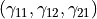
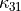
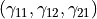
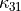
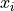
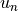
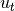
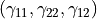

7. Simple shear of a 1D Cosserat layer with Breakage Mechanics material¶
In this tutorial we will study a 1D Cosserat layer with Breakage Mechanics material under simple shear. The full description of this model is available in the paper Cosserat Breakage Mechanics. In this tutorial we provide the basic structure of a script file in the framework of Numerical Geolab. Here we will study the model formulation and execute the analysis.
The file for this tutorial can be found in: ngeoFE_unittests.Mechanics.Cosserat.OneD.BVP.Cosserat1D_Breakage_Mechanics_test
7.1. Beginning of the file¶
First, we must load certain modules in order to run our simulation. Below we provide a list of the modules needed and a brief explanation.
from dolfin import *
import time
import numpy as np
from ngeoFE.feproblem import UserFEproblem, General_FEproblem_properties
from ngeoFE.fedefinitions import FEformulation
from ngeoFE.materials import UserMaterial
from ngeoFE_unittests import ngeo_parameters
from ngeoFE_unittests import plotting_params
import os # allows easier manipulation of directories
import warnings
from ffc.quadrature.deprecation import QuadratureRepresentationDeprecationWarning
from dolfin.cpp.io import HDF5File
from operator import itemgetter
warnings.simplefilter("once", QuadratureRepresentationDeprecationWarning)
from ngeoFE.feproblem we import the classes of UserFeproblem() and General_FEproblem_properties() that will transform our series of commands to a problem understood by dolfin
from ngeoFE.fedefinitions we import the class of FEformulation() that defines the vector of unknown derivatives to be used in the variational form solved by the dolfin package.
from ngeoFE.materials we import the UserMaterial() class where the material is specified.
from ngeoFE_unittests we import ngeo_parameters. This file contains the material library path and reference data that can be used to check the analysis results in the context of a unit test.
7.2. Material and Numerical Parameters¶
We define the parameters of the Cosserat Breakage material, some values that will help us calibrate the initial values of the system, and some numerical parameters that will determine the size of the system, as well as the accuracy (and thus speed) with which it is solved.
# Set the material values
K = 13833. # Bulk stiffness
G = 7588. # Shear stiffness
zeta = 1. # Elastic-to-plastic Cosserat length scale parameter
h1 = 6./5. # Cosserat stress invariant weighting factor (with 3D kinematic model)
h2 = 3./10. # As above
h3 = 6./5.*zeta**2 # As above
h4 = 3./10.*zeta**2 # As above
Gc = 3*G/(2*(h1 - h2)) # The Cosserat shear stiffness (fully determined by our other parameters)
L = 0.00001 # The Cosserat torsional stiffness (zero in the model, given a very small positive value for numerical reasons)
H = 3*G/(2*(h3 + h4)) # The first Cosserat bending stiffness (fully determined by our other parameters)
Hc = 3*G/(2*(h3 - h4)) # The second Cosserat bending stiffness (fully determined by our other parameters)
theta_gamma = 0.80 # The grain size distribution parameter accompanying the strains
theta_kappa = 0.89 # The grain size distribution parameter accompanying the stresses
Ec = 4.65 # The critical grain crushing energy
M = 1.7 # The slope of the critical state line in :math:`p-q` space (mean stress - triaxial deviatoric stress)
omega = 70. # Coupling angle describing the system's tendency to crush grains or favour pore collapse. It is given here in degrees (we will later automatically convert it to radians)
x_r = 0.105 # The reference grain size
beta = 1. # A legacy parameter that is unimportant for understanding the model
# Set the initial value of B
B_nought = 0.0
# Target confinement stress as a fraction of p_crit
p_frac = 0.3
# Set the target gamma (i.e. the equivalent homogeneous strain we wish to subject the system to)
gamma = 0.2
# Set the system size (in mm)
h = 17.5
# Set the rescaling factor. A value of 1 solves the system "as written". Values larger than this (say 1000) cause the system to be solved more quickly, at the cost of some accuracy.
rescale_factor = 1
# Set the desired tolerance level (for this code, material will have +1) for the residual. This can also be changed to increase accuracy at the cost of speed (or vice versa), provided the material has been compiled at the requested tolerance level.
tolerance_level = 5
# Set the number of elements that we want
element_number = 641
7.3. Finite Element Formulation¶
We do this by specifying the number of vector components for the test function, the interpolation function used inside the element and the number Gauss points present in the element for the integral evaluation of the weak form.
class Cosserat1DFEformulation(FEformulation):
'''
Defines a user FE formulation
'''
def __init__(self):
# Number of stress/deformation components
self.p_nstr = 4
# Number of Gauss points
self.ns = 2
def generalised_epsilon(self, v):
"""
Set user's generalised deformation vector
"""
gde = [
Dx(v[0], 0)/rescale_factor, # gamma_11
v[2]/rescale_factor, # gamma_12
(Dx(v[1], 0) - v[2])/rescale_factor, # gamma_21
Dx(v[2], 0)/rescale_factor # kappa_31
]
return as_vector(gde)
def create_element(self, cell):
"""
Set desired element
"""
# Defines a Lagrangian FE of degree 2 for the displacements
element_disp = VectorElement("Lagrange", cell, degree=2, dim=1)
# Defines a Lagrangian FE of degree 1 for the rotations
element_rot = FiniteElement("Lagrange", cell, degree=1, dim=1)
# Creates a mixed element for Cosserat medium
element = MixedElement([element_disp, element_rot])
return element
 and
and  directions, we only allow variation in the direction. This is analogous to the situation we would find in a fault, where variation within the fault plane is negligible, but variation across the fault is very important. Thus, we require only three strain components , but because we are in the Cosserat continuum, these are defined to include the contribution of the Cosserat micro-rotations, and to not in general result in a symmetric strain tensor. Further, in this geometry one of the curvatures remains in the problem, so we also include  in our generalised deformation vector.
directions, we only allow variation in the direction. This is analogous to the situation we would find in a fault, where variation within the fault plane is negligible, but variation across the fault is very important. Thus, we require only three strain components , but because we are in the Cosserat continuum, these are defined to include the contribution of the Cosserat micro-rotations, and to not in general result in a symmetric strain tensor. Further, in this geometry one of the curvatures remains in the problem, so we also include  in our generalised deformation vector.In the code snippet above, we provide the finite element formulation for the problem at hand. The class is initialised with four generalised strain components and two Gauss points (as we use finite elements of at least degree 2 for the displacements in the Cosserat continuum). The python function:
- generalised_epsilon(v)¶
- create_element(cell)¶
We note here that the VectorElelement() class indicates that the components of the function space for each vector component are the same.
7.4. Boundary identification¶
We proceed now by identifying the boundaries needed for the application of the boundary conditions at a later stage of the modelling procedure. We make use of the SubDomain() parent class inside dolfin:
- class SuDomain(x, on_boundary)¶
We create two subclasses (children) of the class, one for each side of the linear domain, which inherit from it the spatial variables (x) and the boundary identification flag (on_boundary) and the method
- inside(x, on_boundary)¶
The subclasses are defined as follows:
class bottom(SubDomain):
def inside(self, x, on_boundary):
return x[0] < 0. and on_boundary
class top(SubDomain):
def inside(self, x, on_boundary):
return x[0] > 0. and on_boundary
Inside each subclass we define the logical test for assigning the specific boundary node to one of the boundary regions, where the boundary conditions will be applied. The value x[i] indicates the spatial coordinate  of the problem at hand.
7.5. Finite element problem description¶
We proceed now with building the main finite element model, corresponding to shearing in 1D a Cosserat Breakage Mechanics medium. The finite element model is built inside a child class that inherits its methods from the parent class UserFEproblem(). We will provide here commentary for each method used inside the child class Cosserat1DFEproblem(UserFEproblem).
class Cosserat1DFEproblem(UserFEproblem):
"""
Defines a user FE problem for given FE formulation
"""
def __init__(self, FEformulation):
self.description = "Example of a 1D shearing problem in the Cosserat continuum"
self.problem_step = 0
self.h = h
super().__init__(FEformulation)
In the class __init__() method, the finite element formulation defined above is provided as an argument. The initialisation then proceeds to set up all the methods of the parent class UserFEproblem(). The methods inside the class are defined by overriding the methods inside the parent class.
def set_general_properties(self):
"""
Set here all the parameters of the problem, except material properties
"""
self.genprops = General_FEproblem_properties()
# Number of state variables
self.genprops.p_nsvars = 76
This method is used to provide the number of state variables of the material. In this tutorial only the mechanical behaviour is important and therefore, the state of material is described by While this is a 1D problem, the material is a fully 3D implementation, and so requires all of the information of the general 3D problem. For each material used by the Numerical Geolab, the number of state variable components is given in the section Material description. We also note that “state” here describes the information that is given and returned by the material model, chosen for numerical efficiency. This is rather more extensive information than the physical state variables of the system (the breakage index B, and the elastic strains and curvatures), as the extra information aids in making our calculation fast.
For this simple geometry the capabilities of dolfin can be used to define a linear mesh specifying the bottom and top of the domain, as well as the number of elements in the domain. The meshing step can also be accomplished using external software such as Gmsh, which may be required for more complicated geometries than dolfin is able to generate on its own.
def create_mesh(self):
"""
Set mesh and subdomains
"""
# Generate mesh
ny = 641
h = self.h
mesh = IntervalMesh(ny, -h, h)
cd = MeshFunction("size_t", mesh, mesh.topology().dim())
fd = MeshFunction("size_t", mesh, mesh.topology().dim()-1)
return mesh, cd, fd
For the domain at hand we specify a discretisation with ny = 641 elements along the x[0] component. The MeshFunction() method of dolfin is used to provide the mesh object, the interior domain and the boundary domains.
We next assign values to the regions of the mesh (that could in principle be) defined by different material properties:
def create_subdomains(self, mesh):
"""
Create subdomains by marking regions
"""
subdomains = MeshFunction("size_t", mesh, mesh.topology().dim())
subdomains.set_all(0) # assigns material/props number 0 everywhere
return subdomains
In this tutorial the entire domain is defined by the same material properties and therefore the value 0 will be assigned everywhere inside the mesh. This value is a number indicating which material parameters need to be taken into account in each mesh region (see the corresponding method set_material_params()). For example, we could have also created another region with a material that has a slightly decreased critical breakage energy (Ec in the model), in order to represent a weaker material, or to favourably trigger localisation in an area that we may have meshed more finely.
We do so by assigning the numbers 1 and 2 to the different boundaries of the model. To do this we use the method mark() from the SubDomain() class of dolfin.
def mark_boundaries(self, boundaries):
"""
Mark bottom and top boundary points
"""
boundaries.set_all(0)
top0 = top()
top0.mark(boundaries, 1)
bottom0 = bottom()
bottom0.mark(boundaries, 2)
return
7.5.1. Assigning boundary conditions¶
We are now able to identify the boundaries of the mesh and assign different boundary condition to each side of the boundary (if we wish). The way we apply the boundary conditions can be seen in the method:
- set_bcs()¶
def set_bcs(self):
"""
Set boundary conditions for the user problem. These take the structure
[region_id, [bc_type, [dof], value]], where region_id is the label we gave
the boundary in the mark_boundaries() function (1 or 2 in this case),
bc_type is one of Dirichlet (0), Neumann (1) or Robin (2), dof is the degree
of freedom we apply the boundary condition to (we are not obliged to specify
a condition on every dof on the boundary if we don't wish to), and value
is the value we set the boundary condition to take
"""
h = self.h
p_crit_zero = np.sqrt(2*K*Ec/theta_gamma)
stress_target = p_frac*p_crit_zero
strain_target = stress_target/K
u_n = strain_target*2*h*rescale_factor
u_t = gamma*2*h*rescale_factor
if self.problem_step == 0:
bcs = [
[1, [0, [0, 0], 0.]],
[1, [0, [0, 1], 0.]],
[1, [0, [1], 0.]],
[2, [0, [0, 0], u_n]],
[2, [0, [0, 1], 0.]],
[2, [0, [1], 0.]]
]
elif self.problem_step == 1:
bcs = [
[1, [0, [0, 0], 0.]],
[1, [0, [0, 1], 0.]],
[1, [0, [1], 0.]],
[2, [2, [0, 0], u_n]],
[2, [0, [0, 1], u_t]],
[2, [0, [1], 0.]]
]
return bcs
Inside this method the boundaries are assigned with the use of a nested list. Dirichlet, Neumann and Robin boundary conditions can be applied both incrementally (as we have done here) and instantaneously. The boundary conditions can be assigned to a boundary region or point-wise. In this case, we have set time-varying boundary conditions, by first applying an initial loading to a level of elastic strain that will correspond to a certain confining stress, and then maintaining that confining displacement  and beginning to shear the system to a target displacement of  on the top edge.
In this example, the region id ranges from 1 to 2 indicating the top and bottom regions of the boundaries. The type of bc is set to 0, specifying incremental Dirichlet boundary conditions. The vector component shows which component of the generalised displacement vector is to be affected and value indicates the value of the boundary condition to be set at the specific boundary.
7.6. Material specification¶
Next, we define the analysis material that we have already assigned in the create_subdomains() method.
def set_materials(self):
"""
Create material objects and set material parameters
"""
mats = []
# load material #1
env_lib = ngeo_parameters.env_lib
umat_lib_path = ngeo_parameters.umat_lib_path
umat_lib = umat_lib_path + '/COSSERAT3D-BREAKAGE/libplast_Cosserat3D-Breakage.so'
umat_id = 1 # if many materials exist in the same library
mat = UserMaterial(env_lib, umat_lib, umat_id)
mat.props = self.set_material_properties()
mats.append(mat)
return mats
The ngeo_parameters.py module contains the relative path to the materials libraries, which specify the different materials available to the user. The variable umat_id = 1 needs to be set for the analyses performed here. It specifies the mapping of the updated vector components of the strain increment  and corresponding tensor components of the constitutive matrix, with their position in the 3D strain vector and 3D constitutive matrix provided at the material subroutine (material algorithm). This mapping returns back the correct components of the stress vector and constitutive matrix to pass into the residual calculation of the weak form in dolfin (equilibrium iterations). The material properties passed into the material algorithm, are set with the helper method:
def set_material_1_properties(self):
"""
Sets material parameters
"""
omega_rad = omega*math.pi/180. # We convert the coupling angle to radians
c2wEc = math.cos(omega_rad)**2/Ec # We find cos^2(omega)/Ec (for numerical convenience)
s2wEc = math.sin(omega_rad)**2/Ec # We find sin^2(omega)/Ec (for numerical convenience)
props = np.array([K, G, Gc, L, H, Hc, theta_gamma, theta_kappa, beta, x_r, Ec, M, c2wEc, s2wEc, h1, h2, h3, h4, 0.]) # Load the properties as an array
props = props.astype("double")
return props
7.7. Analysis execution - confining step¶
Our model is now set and ready to run. In order to perform an analysis for the problem at hand, we can simply type:
path1 = '../reference_data'
my_FEformulation = Cosserat_1D_layer_FEformulation()
my_FEproblem = Cos_BKG_1D_layer_FEproblem(my_FEformulation)
saveto = path1 + "c_rescaled_" + str(rescale_factor) + ".xdmf"
my_FEproblem.slv.dtmax = .1
converged = my_FEproblem.solve(saveto) # This saves the first confining loading part of the problem
# Now we change the boundary conditions
my_FEproblem.problem_step = 1
my_FEproblem.bcs = my_FEproblem.set_bcs()
my_FEproblem.feobj.symbolic_bcs = sorted(my_FEproblem.bcs, key=itemgetter(1))
This will use the solve method inside the parent UserFeproblem() class that starts the solution procedure. The analysis results are the saved to an ‘.xdmf’ file to be postprocessed by a third party application (e.g. ParaView).
7.8. Control of the solution procedure¶
The FEproblem() class of Numerical Geolab allows for great flexibility in choosing the solver parameters with which an analysis can be performed. Below a set of parameters can be passed as attributes to the solver for controlling the maximum analysis time (my_FEproblem.slv.tmax), the maximum increment size (my_FEproblem.slv.dtmax), the maximum number of iterations (my_FEproblem.slv.nitermax), the maximum number of increments (my_FEproblem.slv.nincmax), and the convergence tolerance (my_FEproblem.slv.convergence_tol). We note that the convergence tolerance must be larger than the tolerance given in the material.
my_FEproblem.slv.tmax = 2.
my_FEproblem.slv.dtmax = .5
my_FEproblem.slv.nitermax = 500
my_FEproblem.slv.nincmax = 1000000
my_FEproblem.slv.convergence_tol = 1.*10**(-tolerance_level) # has to be bigger than the materials
7.9. Analysis execution - shearing step¶
Finally, we execute the shearing stage of the simulation. Depending on the target homogeneous shear strain value chosen, as well as the rescaling factor, this can be quite time-consuming (on the order of hours for a personal computer). This is because we will have a shear band forming in the system, and the correct resolution of the system during the initial localisation process requires very small time increments. However, once the band is fully established the system speeds up again, so calculation time is not a simple linear function of target strain.
saveto = path1 + "s_rescaled_" + str(rescale_factor) + ".xdmf"
converged = my_FEproblem.solve(saveto, summary=False)
7.10. Analysis results¶
For this example no analytical solution exists to be compared to. However, the results of the simulation are stored in .xdmf/hdf5 files that are easily viewable and analysable in software such as ParaView.